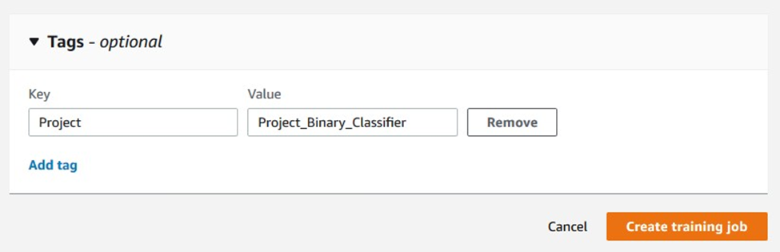
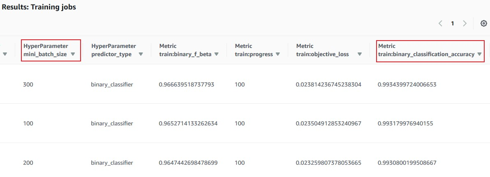

Search Using the Amazon SageMaker Console and API
Developing a machine learning model typically requires extensive experimenting with different datasets, algorithms, and hyperparameter values. To manage up to thousands of machine learning model experiments, use the search capabilities in SageMaker.
You can use SageMaker search to:
-
Organize, find, and evaluate training jobs using properties, hyperparameters, performance metrics, or any metadata.
-
Find the best performing model by reviewing training job and model metrics, such as training loss or validation accuracy.
-
Trace a model's lineage to the training job and its related resources, such as the training datasets.
This topic covers searching from the SageMaker console and the SageMaker API.
Topics
Organize, Find, and Evaluate Training Jobs (Console)
To organize training jobs, assign one or more tags to them.
To find a specific training job, model, or resource, use model tracking to search on keywords assigned to any searchable items. Searchable items include training jobs, models, hyperparameters, metadata, tags, and URLs. To refine your tracking results, you can search using multiple criteria.
To choose the best model for deployment, evaluate how all models performed against one or more metrics. You can use model tracking results to list, sort, and evaluate the performance of the models in your experiments.
Topics
Use Tags to Track Training Jobs (Console)
To group training jobs, create tags with descriptive keys and a value. For example, create tag keys for: project, owner, customer, and industry.
Add tags to training jobs (console)
-
Open the Amazon SageMaker console
. -
In the navigation pane, choose Training jobs and Create training job.
-
Scroll to the bottom of the page and enter a key and value for the tag.
 -
To add another tag, choose Add tag, and add another key-value pair.
Find Training Jobs (Console)
You can search for training jobs using a variety of job attributes. Note that some search parameters appear only if you have created a training job with that attribute. For example, Tags appears only if you have added a tag for a training job.
To find training jobs (console)
-
Open the Amazon SageMaker console
. -
In the navigation pane, choose Search.
-
Add Parameters.
-
In the search box, enter a parameter and choose a parameter type, for example TrainingJobName.
-
Choose a conditional operation. For numeric values, use operators such as is equals to, lesser than, or or greater than. For text-based values, use operators such as equals to or contains.
-
Enter a value for the parameter.
-
-
(Optional) To refine your search, add additional search criteria. Choose Add row and enter the parameter values.
-
Choose Search.
Evaluate Models (Console)
To evaluate a model's performance, review its metadata, hyperparameters, and metrics. To highlight metrics, adjust the view to show only metrics and important hyperparameters.
To evaluate a model (console)
-
Open the Amazon SageMaker console
. -
In the navigation pane, choose Search and search for training jobs by specifying relevant parameters. The results are displayed in a table.
 -
Open the preferences window by choosing the settings icon in the search results table.
-
To show or hide a hyperparameter or metric, turn it on or off by choosing Hyperparameter or Metric .
-
Make necessary changes, then choose Update view.
-
After viewing metrics and important hyperparameters, you can compare and contrast the result. Then, you can choose the best model to host or investigate the models that are performing poorly.
Find and Evaluate Training Jobs (API)
To
the find and evaluate training jobs or to
get
suggestions for items used in experiments that are searchable, you
can use the Search
API.
Find Training Jobs (API)
To find training jobs, create a search parameter using the
search_params parameter. Then use the search function in the
smclient
subprocess
in the AWS SDK for Python (Boto3).
The
following
example shows how to use the Search API
to find
training jobs.
import boto3 search_params={ "MaxResults": 10, "Resource": "TrainingJob", "SearchExpression": { "Filters": [{ "Name": "Tags.Project", "Operator": "Equals", "Value": "Project_Binary_Classifier" }]}, "SortBy": "Metrics.train:binary_classification_accuracy", "SortOrder": "Descending" } smclient = boto3.client(service_name='sagemaker') results = smclient.search(**search_params)
Evaluate Models (API)
To evaluate models, run a search as described in Find Training Jobs (API), review model metrics, then, use the AWS SDK for Python (Boto3) to create a table and plot it.
The following example shows how to evaluate models and to display the results in a table.
import pandas headers=["Training Job Name", "Training Job Status", "Batch Size", "Binary Classification Accuracy"] rows=[] for result in results['Results']: trainingJob = result['TrainingJob'] metrics = trainingJob['FinalMetricDataList'] rows.append([trainingJob['TrainingJobName'], trainingJob['TrainingJobStatus'], trainingJob['HyperParameters']['mini_batch_size'], metrics[[x['MetricName'] for x in metrics].index('train:binary_classification_accuracy')]['Value'] ]) df = pandas.DataFrame(data=rows,columns=headers) from IPython.display import display, HTMLdisplay(HTML(df.to_html()))
Get Suggestions for a Search (API)
To
get suggestions for a search, use
the GetSearchSuggestions
API.
The following example
for
AWS SDK for Python (Boto3) is a get_search_suggestions request for items containing
linear.
search_suggestion_params={ "Resource": "TrainingJob", "SuggestionQuery": { "PropertyNameQuery": { "PropertyNameHint": "linear" } } }
The following is an example response for a get_search_suggestions
request.
{ 'PropertyNameSuggestions': [{'PropertyName': 'hyperparameters.linear_init_method'}, {'PropertyName': 'hyperparameters.linear_init_value'}, {'PropertyName': 'hyperparameters.linear_init_sigma'}, {'PropertyName': 'hyperparameters.linear_lr'}, {'PropertyName': 'hyperparameters.linear_wd'}] }
After getting search suggestions, you can use one of the property names in a search.
Verify the Datasets Used by Your Training Jobs
You can use model tracking capability to verify which datasets were used in training, where holdout datasets were used, and other details about training jobs. For example, use model tracking capability to verify that a specific dataset was used in a training job for an audit or to verify compliance.
To check whether a specific dataset was used in a training job, you search for the URL to its location in Amazon Simple Storage Service (Amazon S3). Model tracking capability returns the training jobs that used the dataset that you specify. If your search doesn't return the dataset (the result is empty), the dataset wasn't used in a training job. An empty result confirms, for example, that a holdout dataset wasn't used.
Trace Model Lineage
You can use model tracking capability to get information about the lineage of training jobs and the model resources that were used for them, including the dataset, algorithm, hyperparameters, and metrics. For example, if you find that the performance of a hosted model has declined, you can review its training job and the resources it used to determine what's causing the problem.
Trace Model Lineage (Console)
To trace a model's lineage (console)
-
Open the Amazon SageMaker console
. -
In the navigation pane, choose Endpoints, and choose the relevant endpoint.
-
Scroll to the Endpoint configuration settings section. This section lists all of the model versions deployed at the endpoint, with a hyperlink to the training job that created each.
Trace Model Lineage (API)
To trace a model's lineage, get the model's name, then use it to search for training jobs.
The following example shows how to trace a model's lineage using the API.
# Get the name of model deployed at endpoint endpoint_config = smclient.describe_endpoint_config(EndpointConfigName=endpointName) model_name = endpoint_config['ProductionVariants'][0]['ModelName'] # Get the model's name model = smclient.describe_model(ModelName=model_name) # Search the training job by the location of model artifacts in Amazon S3 search_params={ "MaxResults": 1, "Resource": "TrainingJob", "SearchExpression": { "Filters": [ { "Name": "ModelArtifacts.S3ModelArtifacts", "Operator": "Equals", "Value": model['PrimaryContainer']['ModelDataUrl'] }]}, } results = smclient.search(**search_params)
After finding the training job, you can review the resources used to train the model.